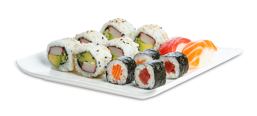

Homemade Sushi is so much cheaper than at the restaurant. Plus, it's easy and fun to make your own rolls at home, so you can put all your favorite ingredients into your perfect custom roll — here's how!
Lay out the nori on the bamboo mat (or whatever you're using). Feel the nori; there should be a rough side and a smooth side. Make sure that the rough side is facing up.
Use your fingers to carefully spread the rice out over the nori. You want the rice to be spread out so that it looks nice and lacy, with some nori showing through the rice.
Add Fillings to the Bottom Quarter of the Nori
Next, carefully roll the sushi so that the end piece of the nori, rice, and ingredients curve over so that you have a shape that looks almost like a snail.
Roll the rest of the roll up into a little Japanese burrito, using your fingers.
Remove the mat and place the roll on a cutting board.
Cut the Sushi
Serve